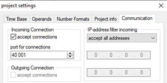

Connecting to WinMOD
The WinMOD Net connection plugin implements the connection to the
WinMOD simulation system using its own proprietary communication library called
WinMOD Net. The WinMOD Net protocol is TCP/IP based and thus works both locally
and over a network.
Note: The communication requires a
separate license on the WinMOD side to function; see Prerequisites.
The WinMOD Net connection plugin is fully featured, including
support for multiple connections, browsing for creating variable pairs, and
event-based value updates from server to simulation.
Prerequisites
- The WinMOD Net library works with WinMOD V7.2 Build 40 and newer.
- WinMOD KU200 configuration
(https://www.winmod.de/english/products/winmod-systemsoftware/winmod-configuration/winmod-konfigurationen_eng/)
license must be available in each of the WinMOD installations you want to
connect to.
- The WinMOD Net communication library needs to be installed on the computer
where R-Pro is used.
Communication Setup
Since the WinMOD Net protocol is TCP/IP based, the connection is made using
the host address and port number. The hostname can be an IP address or a DNS
name. The server port number can be set in WinMOD project settings, and the
default is 40001.
Setting up WinMOD to accept connections

To pair variables, basic
workflow for setting up communication is as below:
- Start WinMOD and load your simulation model.
- Add one or more Communication Elements to your WinMOD simulation.
- Add signals to the Communication elements and connect those to your
simulation.
- Enable incoming connections from WinMOD project settings.
- Connect from R-Pro to WinMOD under Connectivity tab.
- Add variables in R-Pro using the “Create Variable Pairs” window.
- Connect WinMOD inputs to inputs in R-Pro and place the variable pairs to
a server-to-simulation variable group.
- Connect WinMOD outputs to outputs in R-Pro and place the variable pairs
to a simulation-to-server variable group.
- Start simulation in WinMOD and R-Pro.
Note: The accessible WinMOD address space
is structured into Communication Elements, which have input and output signals.
The Communication Elements are identified using a “full path” consisting of the
WinMOD project name, WinMOD layer name, and name of the Communication Element
itself. Signals are identified using the Communication Element “full path” and
the signal name, so any changes to any of the names will require the variables
to be paired again.
Performance
Some technical aspects can impact overall performance achieved with the
WinMOD Net connection plugin, so following these guidelines is essential for
best performance.
- Use cyclic update mode for simulation to server variable groups.
- Choose a cycle interval that is the same or higher than the Time Base
value used in the WinMOD project.
- Sending values to WinMOD at a rate faster than WinMOD’s update cycle
doesn’t give any benefit, which includes the event-based mode in this
direction.
- Use event-based update mode for server to simulation variable groups.
- Only if the update cycle rate is unnecessarily high or the data flow is
overwhelming R-Pro it is recommended to switch to a lower sampling rate
using cyclic update mode.
- Use inputs of any given Communication Element in only a single variable
group.
- Use outputs of any given Communication Element in only a single variable
group.
- Distribute a large number of input signals to more than one Communication
Element. Note: Having many Communication Element can
also cause performance overhead.
- Using up to a few parallel connections to the same WinMOD runtime can be
beneficial in some particular scenarios if maximum throughput and more stable
latency are required.